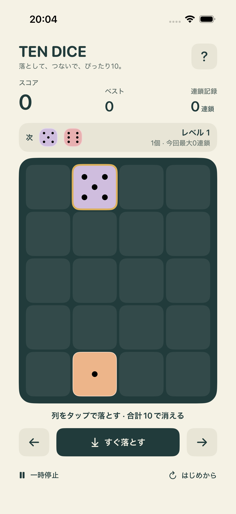

空いている列をタップ
自然に落ちるサイコロを、好きな列へ。タップですぐ着地。左右ボタンでも移動できます。
落ちてくるサイコロを並べて、
合計10でまとめて消す。
小さな盤面で、次の一手が楽しくなる。
無料・広告なし・アプリ内課金なし
プレイに通信・アカウント登録は不要です。

自然に落ちるサイコロを、好きな列へ。タップですぐ着地。左右ボタンでも移動できます。
隙間なく並んだ目の合計が10になると消えます。斜めや曲がった組み合わせは対象外。
4・6・4ならダブル消し。消えたあとにまた10ができると連鎖。全消しは50点のボーナス！
iPhoneの消音モードと音量、アプリの「？」内にあるサウンド設定を確認してください。一時停止中やアプリを離れている間は、BGMも止まります。
ベストスコア・最大連鎖・サウンド設定は端末内に保存します。進行中の盤面はアプリ終了でリセットされます。アプリを削除すると端末内の記録も削除されます。
満杯の列には落とせません。消去や連鎖の演出中、一時停止中も操作を待ちます。空きがある列なら、途中の列の高さに関係なく落とせます。
消えた個数 × 10 × 同時成立数の2乗 × 連鎖数の2乗で計算します。重なるサイコロは一度だけ数えます。すべて消えると追加で50点。8個置くごとに落下が少しずつ速くなります。